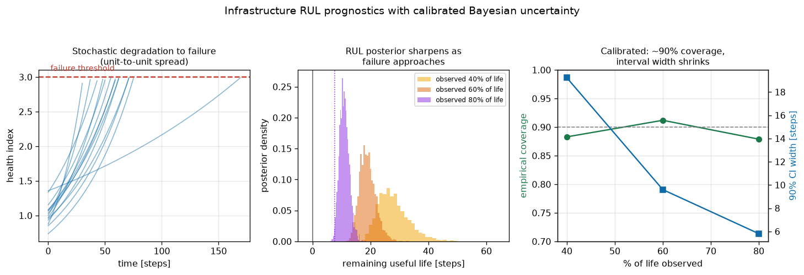

← ポートフォリオ トップ ・ 日立ハイテク（CD-SEM）
鉄道・発電・産業ドライブ（日立の領域）で本当に必要なのは「いつ壊れるか」ではなく「信頼できる故障時刻を、確信度つきで」——信頼区間こそが安全マージンと保全計画を決めるからだ。黙って自信過剰な点推定は、無いより悪い。劣化物理からベイズで余寿命の分布を出し、その分布が本当に正直か（較正）まで検証する。研究の不確かさ定量化（TMCMC）を社会インフラの安全設計へ。
各設備の劣化を指数劣化モデル（log健全度 = a + b·t + ノイズ、個体差 a,b は母集団分布から）で表現し、故障＝しきい値到達とする。ノイズ込みの部分観測から共役ベイズ線形回帰で (a,b) の事後分布を得て、しきい値到達時刻へモンテカルロ伝播すると、余寿命の完全な事後分布——中央値＋90%信頼区間——が出る。母集団フィットが事前分布（経験ベイズ）。
安全にとって決定的なのは較正：多数のホールドアウト設備で、90%区間が本当に約90%の確率で真値を含むか（実測カバレッジ 0.88〜0.91 ≒ 名目90%）を検証し、さらに故障が近づくほど区間幅が19→6ステップと縮むことを示す。素朴な最小二乗の点推定は平均的には当たるが不確かさをゼロで返す＝自信過剰——社会インフラでは危険。「予測を出す」だけでなく「どれだけ自信があるかまで正直に出す」のが、安全が命の領域での価値。

分野横断の関連（実装済み）：ブレード余寿命ツイン（本モジュールの装置版）・医用画像CAD・構造熱応力・ベイズ最適化・代理モデル。出所：hitachi_infra/bearing_rul_uq.py。